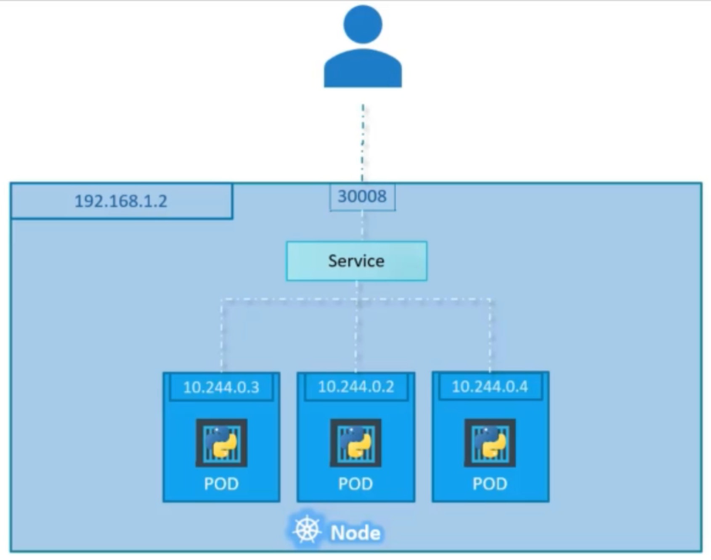
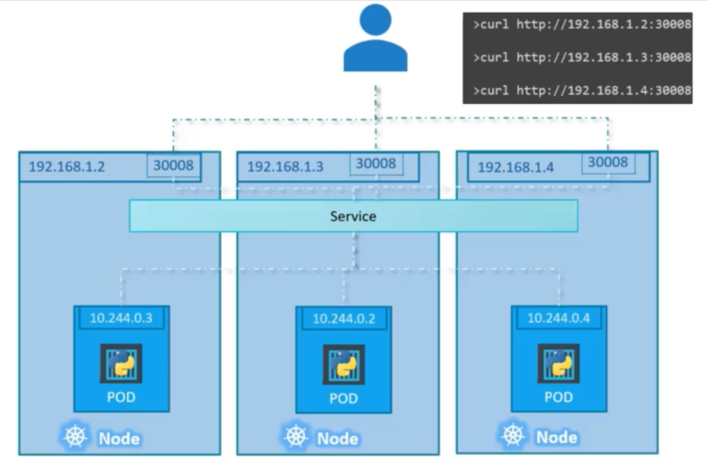
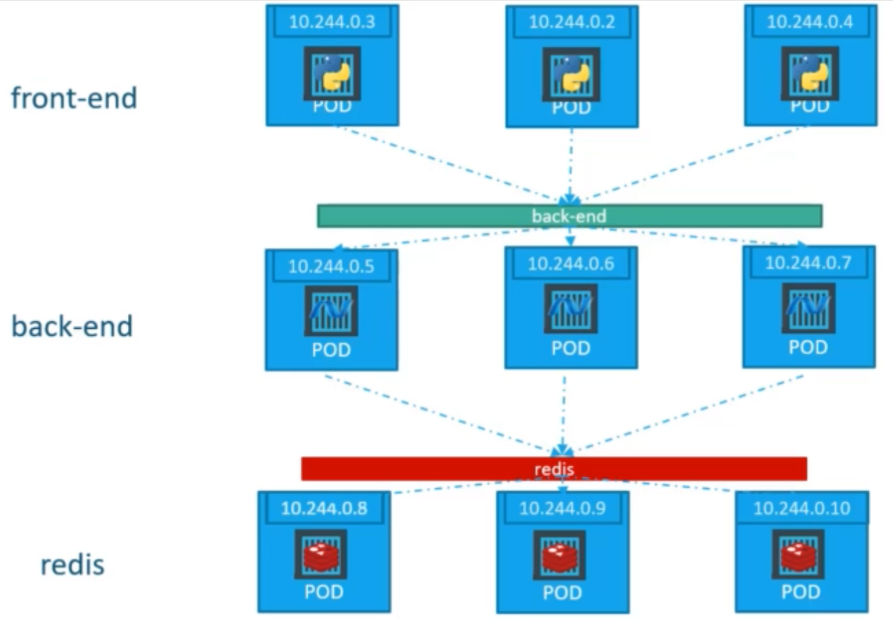

Kubernetes#
Introduction to Kubernetes
YAML in Kubernetes#
Standard Template:
apiVersion: v1
kind:
metadata:
name:
labels:
spec:
apiVersionandkindare Stringmetadatais a dictionarykinddefines the type of the resource
Creating resource with YAML:
kubectl create -f resource-definition.yaml
Pod#
Pods are the smallest unit in Kubernetes cluster which usually contain and run a single container but there can also be multi-container pods (helper containers).
Running a Container:
➜ notes git:(master) ✗ kubectl run nginx --image nginx
pod/nginx created
image name is the docker image name (if kubernetes cluster container backend is docker).
Getting Pods:
➜ notes git:(master) ✗ kubectl get pods
NAME READY STATUS RESTARTS AGE
nginx 1/1 Running 0 7s
1/1 means 1 out of 1 containers is available and ready
Describing Pods:
➜ notes git:(master) ✗ kubectl describe pod nginx
Name: nginx
Namespace: default
Priority: 0
Node: docker-desktop/192.168.65.4
Start Time: Sat, 08 Jan 2022 18:03:26 +0530
Labels: run=nginx
Annotations: <none>
Status: Running
IP: 10.1.0.147
IPs:
IP: 10.1.0.147
Containers:
nginx:
Container ID: docker://66faa22bb05f77c07b51f1edf45ac207f3e4c3899390ef971223792754a8a059
Image: nginx
Image ID: docker-pullable://nginx@sha256:0d17b565c37bcbd895e9d92315a05c1c3c9a29f762b011a10c54a66cd53c9b31
Port: <none>
Host Port: <none>
State: Running
Started: Sat, 08 Jan 2022 18:03:31 +0530
Ready: True
Restart Count: 0
Environment: <none>
Mounts:
/var/run/secrets/kubernetes.io/serviceaccount from kube-api-access-dn6w2 (ro)
Conditions:
Type Status
Initialized True
Ready True
ContainersReady True
PodScheduled True
Volumes:
kube-api-access-dn6w2:
Type: Projected (a volume that contains injected data from multiple sources)
TokenExpirationSeconds: 3607
ConfigMapName: kube-root-ca.crt
ConfigMapOptional: <nil>
DownwardAPI: true
QoS Class: BestEffort
Node-Selectors: <none>
Tolerations: node.kubernetes.io/not-ready:NoExecute op=Exists for 300s
node.kubernetes.io/unreachable:NoExecute op=Exists for 300s
Events:
Type Reason Age From Message
---- ------ ---- ---- -------
Normal Scheduled 27s default-scheduler Successfully assigned default/nginx to docker-desktop
Normal Pulling 26s kubelet Pulling image "nginx"
Normal Pulled 22s kubelet Successfully pulled image "nginx" in 3.7617608s
Normal Created 22s kubelet Created container nginx
Normal Started 22s kubelet Started container nginx
Getting Pods in “wide” format:
➜ notes git:(master) ✗ kubectl get pods -o wide
NAME READY STATUS RESTARTS AGE IP NODE NOMINATED NODE READINESS GATES
nginx 1/1 Running 0 2m48s 10.1.0.147 docker-desktop <none> <none>
Creating Pod using YAML:
pod-definition.yaml
apiVersion: v1
kind: Pod
metadata:
name: myapp-pod
labels:
app: myapp
type: frontend
spec:
containers:
- name: nginx-container
image: nginx
containersis an array
Using environment variables in a Container:
...
...
spec:
containers:
- name: postgres
image: postgres
env:
- name: POSTGRES_PASSWD
value: mysecretpassword
There are better ways to store the “sensitive” data like passwords. e.g.,
Secrets
Creating a Pod Description File from Command line:
kubectl run redis --image=redis123 --dry-run=client -o yaml > pod.yaml
Editing Pod on the Fly:
kubectl edit pod redis
This will open a pod-description file as YAML inside VIM in the terminal
ReplicationControllers and ReplicaSets#
Maintains HA with required number of pods (within a node or cluster)
Provides Load balancing and scalability
ReplicationController (deprecated) Definition#
apiVersion: v1
kind: ReplicationController
metadata:
name: myapp-rc
labels:
app: myapp
type: frontend
spec:
template:
<POD-SPEC-WITHOUT-VERSION-AND-METADATA>
replicas: 3 # number of required replicas
3 Pods will be created (and maintained) with
myapp-rc-prefixRepliationControllerapi is deprecated
ReplicaSet Definition (similar to RC)#
apiVersion: apps/v1 # Difference
kind: ReplicaSet
metadata:
name: myapp-replicaset
labels:
app: myapp
type: frontend
spec:
template:
<POD-SPEC-WITHOUT-VERSION-AND-METADATA>
replicas: 3
selector: # Difference
matchLabels:
type: frontend
3 Pods will be created (and maintained) with
myapp-replicaset-prefixAdditional
selector.matchLabelsto identify which Pods to apply changes to (or scale down to).
Scaling ReplicaSet:
# after update replicas in the definition file
kubectl replace -f replicaset-definition.yaml
kubectl scale --replicas=6 -f replicaset-definition.yaml
kubectl scale --replicas=6 replicaset myapp-replicaset
# ^ type ^ name
Deleting ReplicaSet:_
kubectl delete replicaset myapp-replicaset
Also deletes all underlying pods
Service#
External Access to the App
Load balancing
2 Types
NodePort
ClusterIP
NodePort#
NodePort Service in single Node

NodePort Service in multi-node Cluster

ClusterIP#

service-definition.yaml
apiVersion: v1
kind: Service
metadata:
name: backend
spec:
type: ClusterIP
ports:
- targetPort: 80
port: 80
selector:
app: myapp
type: backend